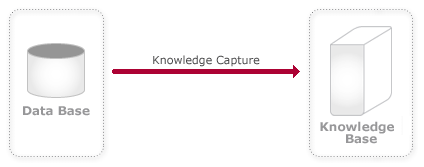

Would you like your GeneXus application to access Data Stores defined in other databases? Furthermore: do you have an existing database over which you want to run a full GeneXus application? The Database Reverse Engineering allows you to do so by applying Reverse Engineering to existing databases. This means that it reads all schema information from a database's table structure and their relationships, and creates all necessary GeneXus objects (Tables, Transactions, Data View, Subtypes) to represent that schema. Reverse Engineering is a broad term, but in this scenario, it means reading a database's table structure and their relationships and defining the necessary GeneXus Objects (data model) to represent the schema.  See more in: Reverse Engineering Process
|
| Pages | ||
| Database Reverse Engineering Wizard | Reverse Engineering Checkings when executed integrated to GeneXus | Reverse Engineering Process |